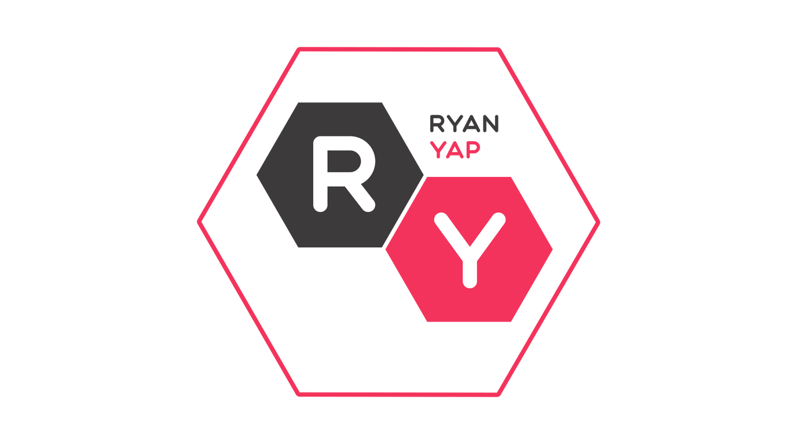
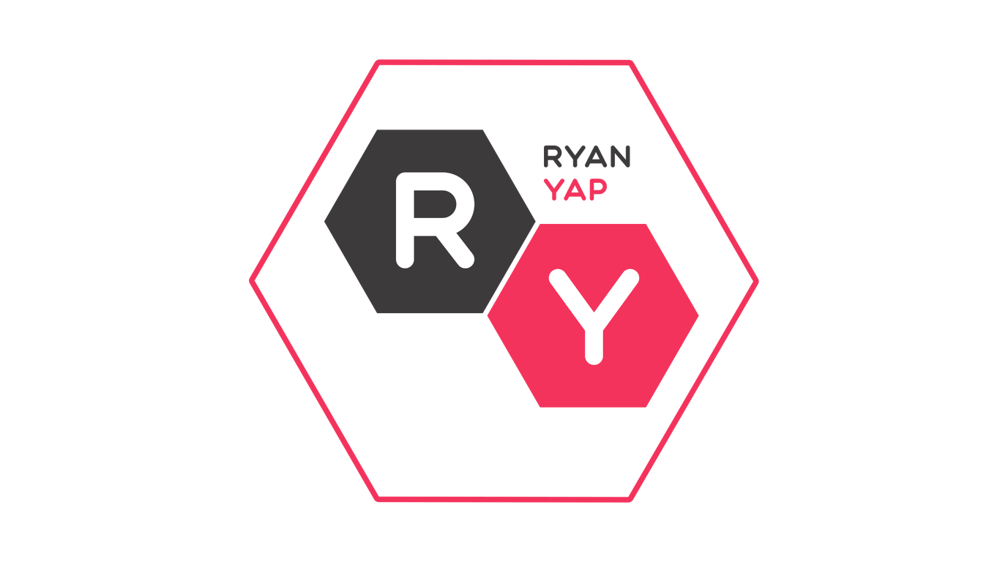

As you can already tell from my introduction, one of my most favoured activities to pass time, is playing the Rubiks Cube.
I started playing since I was 11 and never stopped since. In total, I have more than 30 different forms and variations of Rubiks Cubes. My
fastest record for a typical Rubiks Cube (3x3) is 23 seconds. I can get even faster if I weren't so lazy to learn the rest of the formulas.
I chose to learn and to play the Rubiks Cube even though it was very time consuming to learn, was because it helps me release stress and train
my memory and reaction times which could help me in real life situations.

During long periods of free time at home, I would either fire up my computer or smartphone and play video games to burn time.
I play video games of all genre, but I'm no professional. Lately, I've been spending a lot of time with a group of close friends playing games such
as PUBG (Players' Unknown Battlegrounds) and Werewolf (A mind-strategy game). We would stay up all night long and just keep on playing. To me, its
not about winning or losing, but having fun with the people around you.
The last hobby I'm mentioning would be the hobby of many other people; Listening to music. I listen to all kinds of music genres
through Spotify, regardless of song language. It doesn't matter when I'm on the bus, doing some work, or even doing nothing, I bring around a set of
earphones with me so that wherever I go, I can enjoy my music with me without disturbing other people. My 2 current favourite songs are
'Lighthouse' by Juliette Irons, and the Mandarin song
'他不懂' by '张杰' (Jason Zhang). For music, my current favourite title is the instrumental version of
'Calling Crows'by AllttA.
*The song titles above are links so you could check them out*
 
